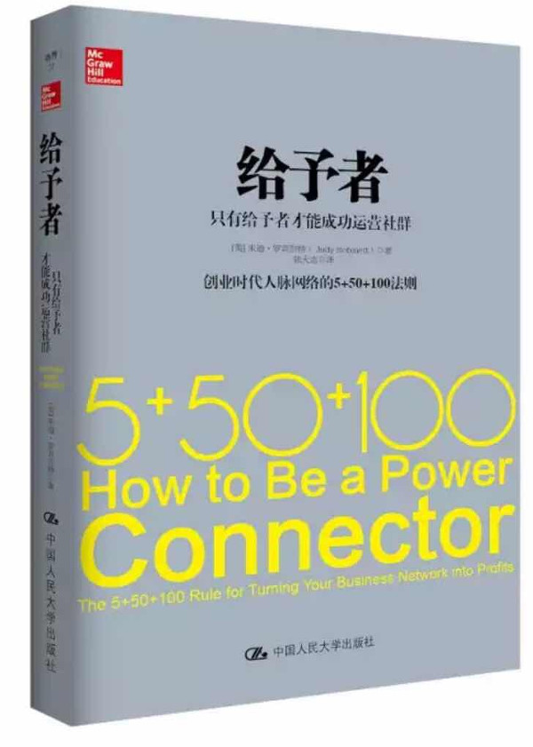

注：【】部分为笔者心得，非原文摘抄。
- 生意中做成的每件事无一不通过人脉。
- 问题的关键不只是你擅长什么，而且是你认识的那些人擅长什么，而你跟他们的关系又如何。
- 更有效的建立人脉的方法应该是，在别人帮助你之前，你应该了解自己如何帮助他人。
- 如果你认为自己的网络只能为自己所用，那么这样的人脉网络最终将衰败。应该思考的是：怎样用对大家都有利的方式把各方联系起来？如果真能如此，你的人脉就具备了真正的深度和广度，只有如此才会成为你提升的杠杆。
- 人脉力量：通过你的人脉网络为自己以及所认识的人获取巨大的影响力。
- 商界的核心真理：一切都与人脉有关。
- 建立战略合作伙伴关系的技巧之一是在不同的领域发展人际网络，然后把一个领域的人介绍给另一个领域，给人们增加价值。
- 研究指出：在年收入过亿美元的公司里，超过 89%的副总裁以上级别管理人员在本领域中的人脉关系对事业的影响要显著高于其个人能力产生的影响。
- 建立人脉时常犯的错误：
- 只是基于自己的需要在错误的地方建立人脉网络；
- 在错误的水平上树立目标；
- 无法有效评估人脉值；
- 缺少系统优化人脉网络的努力；
- 无法在人脉中以最合适的方式建立高价值长期联系。
- 战略人脉关系必须建立在慷慨、创造价值和友谊的基础之上。
- 建立在商务基础上的友谊比只建立在友谊基础上的关系更好。——约翰·D·洛克菲勒
- 社会资本是关系资本的个人化表现。不仅仅指数量，还有各种商业关系的质量和表现。
- 周围的人定义了我们的社会和专业身份。
- 风险投资人和企业家之间寻找资金时，社会关系对资金决策的影响确实大于是否已有一家享有声望的风险投资公司已经投资此项目。——《公司》（Inc.）杂志
- 谁有高价值人脉，谁就有更多的权利，获得更高的回报。
- 战略人脉中，有地位的人越多，你具备的影响力和权力越大。
- 战略人脉关系经常能提供比其他人更早得到的信息，从而让你具备更明显的竞争优势。
- 网络战略人脉在任何情况下都是增强能力的最有效的杠杆。
- 营业收入不是衡量企业的最佳指标。更准确的估值是由利润来表示的。
- 充当不同组织之间桥梁的人会变成全部网络的中心，也更有可能有金钱或者其它回报。——罗伯特·伯特
- 麦特卡夫定律：网络的价值等于网络用户数的平方。
- 人们能保持联系并分配时间的最佳关系数量应该是 150。——罗宾·邓巴
- 人脉的质量比数量更加重要。
- 要在强关系人脉圈中，确保能选出最优秀的人，同时断绝与那些可能造成伤害的人之间的联系。
- 选择人们成为你的战略合作伙伴，首先需要了解他是谁，而不是他已经完成了什么。
- 避开寄生虫、精神病患者和不良习惯者。
- 精神病患者：以自我为中心、不诚实、不负责任；没有内疚、同情心和爱；在人际关系中表现冷漠。
- CEO 比其它行业的专业人士更容易表现出心理变态的特质。——心理学家凯文·达顿
- 依靠人脉所具有的广度、深度和质量，你能在任何方面成为大师，这将决定你的影响力和最终的成功。——克里斯·卡米洛
- 人都倾向于寻找、交往和喜欢与自己有共同特征的人。
- 人脉网络中只存在于自己水平相当的人是种匮乏的表现——心理上、精神上和创造性上都会比较差。太多的同质化会限制你的创新思维和创造新的人脉的能力。
- 如果企业只有团队成员之间的强社会联系，就会缺乏创新，原因是较大的压力和较少的风险。——马丁·吕夫
- 多样的社会网络是产生创新的关键因素。
- 想建立真正丰富多样的网络，你需要突破个人和专业的舒适区，纳入更加多样性的选择。
- 舒适区指的是一个人所表现的心理状态和习惯性的行为模式，人会在这种状态或模式中感到舒适。
- 广泛网络的定义是：连接不同行业、学科、地域、兴趣、性格以及角色的网络。
- 要与精英人士进行具备可信性的互动，否则你永远不过是他们的下级或者附庸。
- 你为别人提供了多少价值以及你自己的情况，决定着人脉网络的响应速度。
- 强大的网络不仅是一种联系，还包括成员之间的互动。基础是要有共同的价值观。
- 倾听和理解那些与你意见不同的人是发展强大网络也是建立强大世界观的基础能力。
- 建立强有力战略人脉关系很好的方法就是关心别人的生活，而不是关于工作的。
- 如果想走得快，那就独自前行；如果想走得远，则结伴同行。——非洲谚语
- 企业家只在自己需要钱时才发现往往很难找到合适的投资。
- 要成功，你必须知道与目标最相关的生态系统，而且与身在其中的人建立多方位的联系。
- 必须知道哪儿是行业的影响力中心。
- 试图加入之前，你必须知道生态系统是如何运作的。
- 对团队里的任何人，必须证明自己值得被信任。当许下承诺后，你要持续增加价值并信守承诺。
- 基于爱好和兴趣与他人建立联系要更加自然而真实。
- 在专业领域中，更大的成功来自于更多的渠道和更大的影响力。
- 所有给予者的基本前提：增加价值是第一位的。
- 置身于能提升自己的人之中。——奥普拉·温弗瑞
- 越向上走，越需要“磨掉粗糙的边缘”。
- 不需要把自己变成性格外向的人，只需要参与其中。
- 经常学习和模仿你所钦佩的人建立人脉的技能。
- 焦点从自己转向其他人可以让沟通变得更加容易，如此也能让其他人感觉好很多。
- 每个重要联系人都曾是陌生人。
- 对给予者而言，每个关系都基于三个因素：别人必须知道你、喜欢你和信任你。
- 热情和喜好的因素可以在开始时建立好印象，从而形成高度可靠的长期关系。
- 打破信用是指不兑现自己的承诺，说了不做。爱需要忍耐，信任是脆弱的。——伊雅娜·范赞特
- 品牌信任就是建立“3C”：信誉、关照和能力。
- 给予者要把精力集中在联系人的质量而非数量上。有质量的联系人的特征是正直、有能力和品行好。
- 对所有给予者的关系而言，寻求增加价值是第一重要因素。
- “互惠主义法则”是指当你付出自己的时间、努力、人脉关系去帮助其他人时，别人会希望回报你。
- 当你用服务代替只想着自己，帮助和支持将百倍回报于你。——卡西·卡布里诺
- 给予者的形成分四个阶段：
- 第一阶段，分析自己和当前的人脉，并定义需要补充进来的人脉；
- 第二阶段，计划你与新朋友的第一次接触，提前准备要分享的内容、你的增值和适当的提问。
- 第三阶段，关于评估与加强联系。与 24 小时内认识的朋友做些事情，并对他们进行评估；
- 第四阶段是给予者真正力量之所在：连接在你网络中的人，让大家共同取得巨大的成功。
- 正确的关系应该是：创建于正确的生态系统中，用正确的方法培养，最终收获成功。
- 想让人脉网络出色工作，最重要的就是了解你自己。——温斯顿·佩雷斯
- 对给予者而言，能提供的最大价值就是运用自己的能力去帮助别人与其所需要的资源建立联系。
- 最强有力的关系是：双方都有能力为对方作贡献，而非建立在单边提供价值的基础上。——罗伯特·西奥迪
- 成为给予者的关键就是意识到你能为别人提供的价值。你必须把所能提供的技术、知识和优势公开化，以便让别人知道，否则，你就是在欺骗所有人。
- 虚心承认自己的弱点与失败的地方。这给出了共同人性的证据，也打开了大门让别人能提供帮助，如此能让人们形成更亲密的关系。
- 真诚和自我反省的环境是伟大关系的基础。
- 你所选择的自己周围人的类型将最终决定你会成为谁。因此，关键在于明智地选择你的导师、合作伙伴、紧密的商业关系。——阿努·巴德瓦伊
- 真正成功的人会有特别明确的目标，同时制订可行的计划去加以实现。
- 当强关系人脉圈的人脉成功介绍你到他们的网络中时，本质上说，他们是赋予你一些他们自己的社会成本。如果你搞砸了，他们也将陷入困境。
- 能先给予而不是索取，双方更容易快速建立关系。
- 正确提问的秘诀：
- 最好的问题是请求对方的建议；
- 一个简单而有效的提问方式是：“你是我的话会怎么办？”
- 你基于提问的故事应该始终从内心出发；
- “请帮助我”将更容易让别人行动起来。
- 让你所说的和你看起来很协调。
- 万豪国际的“15/5 原则”：每个员工都承诺，在万豪，要在客人的 15 英尺内与客人保持眼神接触或者点头示意；如果客人在 5 英尺之内，员工会微笑并跟客人打招呼。
- 开始 3 分钟对建立友善关系是至关重要的。
- 越是多听，其他人就越能感知到你。
- 成功参与的关键点：
- 找到共同点：认识同一个人，来自同一个地方，有共同的经验和观点；
- 找到它们——发现对他们的职业而言非常重要的东西，更重要的是对他们个人非常重要；
- 如果此人不合适，那么保持微笑继续寻找；
- 积极而真诚地分享；
- 设身处地为别人着想；
- 立即给予并为对方增加价值；
- 提出问题，而不是“销售”它；
- 引起兴趣——为下次会面奠定基础；
- 获取信息，作出承诺，并迅速跟进。
- 人脉网络连接的三个步骤：立即再次联系、评估联系并激活你的系统、增加价值并深化关系。
- 不管怎样，你都不能跟坏人签好合同。——沃伦·巴菲特
- 高质量的问题多半会得肯定的回答。
- 权力游戏的一个基本“规则”永远不会过时：礼貌待人、时常联系。——罗伯特·戴伦施耐德
- 不要企图成为成功的人，努力成为有价值的人。——艾伯特·爱因斯坦
- 给予者理解最大的价值就是他可以增加人们之间彼此的联系。
- 钛合金人脉关系网 10 大技巧:
- 开场的三个黄金问题：“我如何帮助你？”“你有建议给我吗？”“我还应该认识谁？”
- 走错地方没法成功；
- 每个棘手的问题都会有个匹配的解决方案。决定性的资源依附于个人。
- 衡量人脉价值的不是净资产，而是善良的心、聪明的头脑和勇气；
- “陌生人很危险”观念对成年人而言是谬误；
- 别人在了解、喜欢和信任你之后，才会与你分享社会资源；
- 不要在人群中迷失。通过你的关键关系 50 人，创建一个具备广度、深度的健康的人脉网。要让光照充足、浇水、施肥，同时进行必要的修剪；
- 坚持两次准则。索取之前提供两次帮助；
- 介绍最有价值的商品，仅进行双赢的连接：双方的价值主张是什么？
- 如果只提一点，那就是“不断从事随机的善良行为”。你永远不知道起到决定性作用的是哪一点。